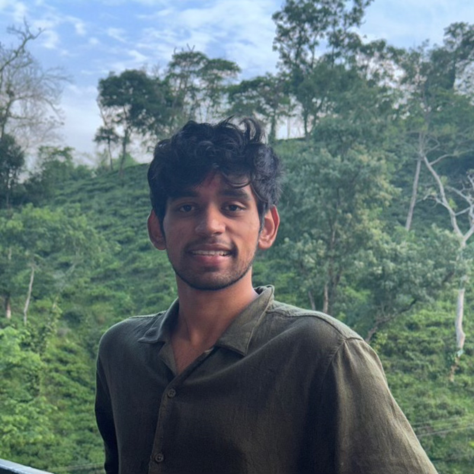

I study how language models hallucinate — and how to detect them when they do. Currently researching faithfulness of Chain-of-Thought reasoning in LLMs at IIIT Hyderabad. Joining LinkedIn as an ML Engineer this summer.
I'm a dual-degree student (B.Tech in CS, MS by Research in Computational Linguistics) at IIIT Hyderabad, working with the Language Technologies Research Centre under Prof. Radhika Mamidi.
My research sits at the intersection of language models and trust: I work on detecting hallucinations in scientific question-answering, especially across languages where the problem is least studied. The CAP benchmark was built in collaboration with Université de Lorraine, and I'm drawn to the questions sitting just past the edge of current benchmarks — the ones where existing methods quietly fail.
Outside the lab, I've spent time on the applied side at LinkedIn, Typeface.ai, and Subtl.ai — building retrieval pipelines, multimodal datasets, and RAG systems at production scale. I'll be returning to LinkedIn as an ML Engineer this summer. Off-screen, I captain the cricket team at IIIT, play for the Basketball and the Volleyball teams, and I play the Veena.
A 9-language benchmark grounded in 293 ACL award-winning papers, 900 questions, and 7,000+ expert-annotated LLM responses. State-of-the-art detectors fall below Macro-F1 of 0.50 — an open challenge.
Reframing hallucination as an entailment failure — and showing that equivalence tasks need bidirectional NLI while directional tasks don't. Ranked 13th globally on the shared task.
A race-adaptive detection model across 4 racial cohorts and 2,473 fundus images. Improved early-stage sensitivity from 56% to 74% with a three-stage classical-ML pipeline.
Returning full-time this summer to work on machine learning systems at scale.
Built a scalable pipeline for a 100K-pair multimodal retrieval dataset; cut GPT labeling calls 40× by applying classical ML over 10TB of feed data.
Pipeline for attribute extraction from reference images, enabling derivative generation. Auto-segregation model hit 0.89 accuracy on a 10-class classification task.
Document summarization and LLM benchmarking. Improved retrieval accuracy on an existing RAG pipeline by 10%.
Hallucination detection under Prof. Radhika Mamidi. Currently working on understading the faithfulness of Chain-of-Thought reasoning in LLMs.
What happens when you ask a BERT variant to read contracts the way a lawyer would?
Self-attention, positional encoding, machine translation — the whole machinery, rebuilt from the paper up.
Do prompt-tuned GPT-2 representations align with the brain better than fine-tuned ones? Extended to vision, too.
Detecting LLM hallucinations on QA tasks by leaning on knowledge graphs — without falling off the context window cliff.
Why not for the game we love?
A few more papers, a few more repos, a few more half-finished ideas living on Google Scholar and GitHub.
Open to research collaborations on multilinguality, LLM reliability, reasoning, and the messy edge of NLP where existing benchmarks stop being useful. Or any chat about F1, sports, feel free to reach out!